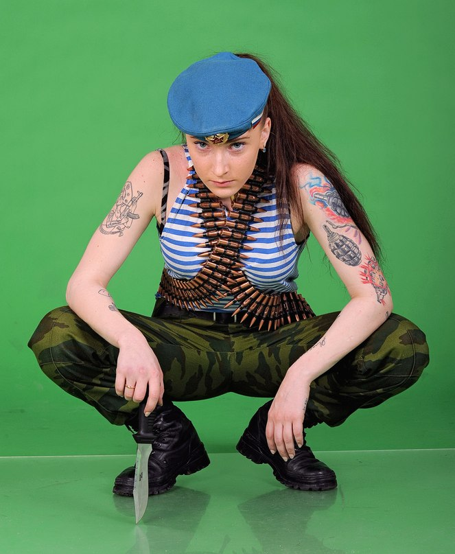

Бар "7 летних ночей"
Страница 16 из 40 •  1 ... 9 ... 15, 16, 17 ... 28 ... 40
1 ... 9 ... 15, 16, 17 ... 28 ... 40
Re: Бар "7 летних ночей"
автор Гость в Пн 26 Янв 2015 - 0:49
Гость- Гость
Re: Бар "7 летних ночей"
автор peregarrett в Пн 26 Янв 2015 - 0:52

peregarrett- Находка для шпиона

- Сообщения : 3264
Дата регистрации : 2014-09-07
Возраст : 36
Re: Бар "7 летних ночей"
автор Гость в Пн 26 Янв 2015 - 0:56
место рождения: село Яблочное, Сумская область, УССР.
Прямой родственник:
Гость- Гость
Re: Бар "7 летних ночей"
автор peregarrett в Пн 26 Янв 2015 - 1:00
peregarrett- Находка для шпиона
- Сообщения : 3264
Дата регистрации : 2014-09-07
Возраст : 36
Гость- Гость
peregarrett- Находка для шпиона
- Сообщения : 3264
Дата регистрации : 2014-09-07
Возраст : 36
Re: Бар "7 летних ночей"
автор Гость в Пн 26 Янв 2015 - 1:05
Гость- Гость
Re: Бар "7 летних ночей"
автор peregarrett в Пн 26 Янв 2015 - 1:07
peregarrett- Находка для шпиона
- Сообщения : 3264
Дата регистрации : 2014-09-07
Возраст : 36
Re: Бар "7 летних ночей"
автор Гость в Пн 26 Янв 2015 - 1:08
Гость- Гость
Re: Бар "7 летних ночей"
автор peregarrett в Пн 26 Янв 2015 - 1:12
Вкус формалина на милом лице
Пусть остается со мной навсегда
Ты и твоя красота!
peregarrett- Находка для шпиона
- Сообщения : 3264
Дата регистрации : 2014-09-07
Возраст : 36
Re: Бар "7 летних ночей"
автор Гость в Пн 26 Янв 2015 - 1:15
Гость- Гость
Re: Бар "7 летних ночей"
автор peregarrett в Пн 26 Янв 2015 - 1:17
peregarrett- Находка для шпиона
- Сообщения : 3264
Дата регистрации : 2014-09-07
Возраст : 36
Re: Бар "7 летних ночей"
автор Гость в Пн 26 Янв 2015 - 1:19
Гость- Гость
Re: Бар "7 летних ночей"
автор peregarrett в Пн 26 Янв 2015 - 1:22
От душевного порыва не застрахуешься.
peregarrett- Находка для шпиона
- Сообщения : 3264
Дата регистрации : 2014-09-07
Возраст : 36
Re: Бар "7 летних ночей"
автор Гость в Пн 26 Янв 2015 - 1:24
Гость- Гость
Re: Бар "7 летних ночей"
автор peregarrett в Пн 26 Янв 2015 - 1:24
peregarrett- Находка для шпиона
- Сообщения : 3264
Дата регистрации : 2014-09-07
Возраст : 36
Re: Бар "7 летних ночей"
автор Гость в Пн 26 Янв 2015 - 1:33
Вот:
- предыстория:
- Капитан Ветров Максим Давидович, 1980 г.р., командир 2 роты 4 отдельного специального бронетанкового батальона 2 армии южного фронта. 22 декабря 2013 года после рейда батальона по ближним тылам противника в окрестностях Ростова без вести пропал прямо из кузова штабного БМП.
Гость- Гость
Re: Бар "7 летних ночей"
автор peregarrett в Пн 26 Янв 2015 - 1:48
Там гораздо интереснее облик, который специально для него приняла аномалия...
peregarrett- Находка для шпиона
- Сообщения : 3264
Дата регистрации : 2014-09-07
Возраст : 36
Re: Бар "7 летних ночей"
автор Гость в Пн 26 Янв 2015 - 1:49
Гость- Гость
Re: Бар "7 летних ночей"
автор peregarrett в Пн 26 Янв 2015 - 1:51
peregarrett- Находка для шпиона
- Сообщения : 3264
Дата регистрации : 2014-09-07
Возраст : 36
Re: Бар "7 летних ночей"
автор Гость в Пн 26 Янв 2015 - 1:52
Гость- Гость
Re: Бар "7 летних ночей"
автор peregarrett в Пн 26 Янв 2015 - 1:55
peregarrett- Находка для шпиона
- Сообщения : 3264
Дата регистрации : 2014-09-07
Возраст : 36
Гость- Гость
Re: Бар "7 летних ночей"
автор Гость в Пн 26 Янв 2015 - 3:07
- Маша:
- Облака. Они так медленно и лениво ползут по небу. Когда смотришь на них, почему-то не задумываешься, что вот так же лениво они ползли над нашими родителями, их родителями и родителями их родителей. И над нашими детьми тоже, наверное, будут ползти…
- Славя! – Громкий окрик знакомого до боли голоса выдернул девушку из послеобеденной дремы.
Быстро поднявшись со скамейки, пионерка машинально поправила форму:
- Да, Ольга Дмитриевна. Вы что-то хотели?
- Отдыхаешь? – Вожатая дружелюбно улыбнулась. – Это правильно. Надо иногда.
- Да, разморило что-то. – Славя немного смутилась.
- А у меня для тебя есть ответственное поручение. Я же только что из райцентра вернулась и привезла с собой пополнение!
- Новичка?
- Да. Только эту неженку в дороге, видимо, укачало. Сходи к автобусу, разбуди человека и пошли ко мне на регистрацию. – Ольга Дмитриевна снова широко улыбнулась. – Справишься?
- Конечно!
Настроение как-то само собой резко повысилось. Поправив изящным жестом свою незатейливую прическу, Славя бодрым шагом направилась к остановке.
Ну, надо же! Новичок! Почти в самом конце смены! Знакомиться с новыми людьми всегда интересно, а если ещё он будет интересоваться девушками больше чем кибернетикой, так это вообще замечательно! В мыслях пионерки уже нарисовался образ высокого темноволосого парня с темными, почему-то грустными глазами. Она обязательно с ним подружится, он будет помогать ей, пригласит потанцевать на дискотеке, а потом, вечером, после похода… Славя сама не заметила, как дошла до ворот, отворила створку и выскользнула наружу.
Возле открытой передней двери автобуса кто-то стоял. Яркое солнце не позволило сразу разглядеть вновь прибывшего, потому девушка сделала несколько шагов на встречу незнакомцу и, приветливо улыбнувшись, сказала:
- Привет! Ты уже проснулся…
Ещё не докончив фразу, Славя с удивлением поняла, что ошиблась. Следовало сказать не «проснулся», а «проснулась». Прямо перед ней стояла высокая, крепко сложенная девушка со слегка смуглой кожей. Из-под густой гривы черных волос, ниспадавших чуть ниже плеч, на Славяну в упор смотрели большие карие, почти черные, глаза. Взгляд какой-то необычный, холодный. Да и одета новенькая странно: свободные брюки в светло-серую пятнистую окраску, высокие шнурованные сапоги наподобие военных и черная футболка.
- Тебе… к вожатой… надо… - Славя почему-то растерялась, и никак не могла навести порядок в голове. Что-то как будто пошло не так, как должно было.
- Ты кто? – Новенькая обладала низким, приятным голосом.
- Я Славяна. Но все зовут Славей…
С громким хрустом размяв пальцы и шею, новенькая быстро, но очень внимательно огляделась и представилась:
- Мария. К вожатой, говоришь? Ну, что ж, показывай дорогу.
______________________________________________________________________
- Четвертый на связи! У нас прорыв! Пять объектов ушли на северо-восток!
- Основной группе: продолжать подавление противника. Группе прикрытия: ликвидировать прорыв. Задействуйте снайперов. Конец связи.
Я отпустила гашетку рации и громко выругалась. Ну конечно! Всегда, когда есть хоть самая маленькая вероятность лажи – она обязательно произойдет. Очередная операция по ликвидации террористов с самого начала не задалась. То, что это будут профи, да ещё и с западной подготовкой, было понятно с самого начала, но вот тот факт, что операция пройдет в населенном пригороде… Эти ребята прекрасно понимают, что мы их брать в плен не собираемся. Терять им, фактически нечего, а в подобных ситуациях все боевики ведут себя одинаково.
- Товарищ капитан, группа наблюдения засекла их. – Моя помощница, лейтенант Никитенко, нервно поправила гарнитуру переговорного устройства. – Квадрат 16-08, двухэтажный дом.
- Гражданские?
- Вероятнее всего – есть.
Разумеется. Самый логичный их ход – прикрывшись живым щитом, завладеть транспортом и сбежать. Вот только я им не позволю. Не имею права.
- Внимание всем! – Снова активирую общий канал связи. – Террористов приказываю уничтожить. Протокол действий – три. Повторяю: действовать по третьему протоколу.
Кончилось все быстро. Когда наш штабной микроавтобус подъехал к месту действия, приземистому кирпичному дому на самом краю поселка, спецы уже начали формировать оцепление и прочесывать ближайшие постройки. Сработали ребята неплохо. Наши снайперши, Ирина и Гульнара, сделали, фактически, невозможное: в условиях плохой видимости и присутствия гражданских выбили трех террористов из пяти. Отличная работа, но не достаточная. Оставшиеся двое прикрылись заложниками и попытались отступить к гаражу. Там их и положили. К сожалению, вместе с гражданскими. Третий протокол ликвидации это допускает.
Я быстро прохожу сквозь узкий коридор и вхожу в низкий двухместный гараж. Здесь все и кончилось. Старый японский внедорожник стоит с открытой водительской дверью. Один из террористов пытался сесть за руль, когда пулеметная очередь разорвала его почти надвое. Двое других лежат рядом. Вместе с гражданскими. Четыре невинных жертвы: муж с женой, хозяева дома, и двое их сыновей. Крупный калибр пулеметных патронов превратил их вместе с террористами в жуткое грязно-кровавое месиво. Только младший ребенок, мальчик лет шести, лежит отдельно. Видимо, он задержался в коридоре, или испугался и побежал. В любом случае, ему досталась всего лишь одна пуля, навылет прошившая грудь. Остекленевшие голубые глаза все ещё широко распахнуты. Малыш просто не понял, что с ним случилось.
- Держать оцепление. – Спецы, уже давно привыкшие к таким картинам, отзываются и расходятся на внешний периметр. – Всему старшему составу собраться в штабной машине.
Когда дверь микроавтобуса захлопнулась, я внимательно оглядела своих подчиненных. Лейтенант Симаков, командир спецов, привычно смотрел на меня, ожидая приказов, а вот Света расклеилась. Хоть и не показывала вида, но от неё прямо-таки веяло истерикой. Что ж, ожидаемо – это её первый выезд на боевую операцию, до того она командовала группой аналитики.
- Николай, пусть твои спецы держат периметр до приезда группы зачистки. Потом передадите территорию местным оперативникам.
- Есть.
- Выполняйте.
Как только лейтенант Симаков покинул машину, я резко придвинулась к Свете и, глядя в упор ей в глаза, начала медленно говорить:
- Рано или поздно, лейтенант Никитенко, но вам самой придется отдать приказ о ликвидации по третьему протоколу. Почти всегда в таких случаях невинных жертв избежать не удается. И если вы не сможете этого сделать, то жертвы потом могут быть гораздо серьезнее. – Света смотрела на меня потерянным взглядом. – Эти твари готовили серьезный теракт. Ты детишек пожалела? А теперь представь, сколько бы таких маленьких трупиков было, подложи они бомбу в автобус? В школу? В детский сад? В этом вся проклятая суть нашей работы. И если ты не готова на такие решения – эта работа не для тебя.
Помощница отвела взгляд. Одинокая слеза все-таки скатилась по её бледной щеке, но контроль над собой девочка не потеряла.
- Я понимаю, Мария Леонидовна… просто… это…
- Привыкнешь. Со временем. Либо так, либо никак. – Все-таки, надо признать, что для первого раза Света держалась неплохо. – А теперь слушай приказ: останешься со спецами, проследишь за работой группы зачистки и сдашь территорию местным.
Штабной микроавтобус медленно покачивался на неровностях дороги. В салоне было жарко. Я уже сбросила с себя тяжелый бронежилет, разгрузку, кобуру с верным «стечкиным» и камуфляжную куртку, оставшись в одной черной форменной футболке. В затемненном окне пролетали плохо освещенные пригороды, куда-то неслись машины, спешили люди. Снег пошел. Я смотрела на все это безразличными глазами, снова и снова вспоминая сегодняшнюю операцию. Нет, это далеко не первый раз, когда что-то идет не так, как планировалось. Все дело в том, что последние несколько лет подобное происходит с завидной регулярностью. Слишком часто я смотрю в глаза тем, кого лично обрекла на смерть. И самое страшное – я при этом уже почти ничего не чувствую. Даже жалости. Наверное, учитывая специфику моей работы, это даже и хорошо. Хотя… нет-нет, да и появится в голове подлая мыслишка о том, что для таких как я в аду заготовлено специальное отделение. VIP, так сказать.
Странно, а ведь моя жизнь начиналась совсем по-другому. Отличница, спортсменка (куча наград по различным стилям рукопашного боя и стрельбе до сих пор где-то дома валяются) да и внешностью Бог не обделил, не сочтите за саморекламу. Предо мной было бесконечное множество путей: удачное замужество, наука, преподавание, бизнес… а выбрала я смерть. И ведь не вербовал меня никто – просто предложили. Контора (та самая, про которую никто не говорит, но все знают) в те годы голодала как финансово, так и кадрово, вот и предлагали всем мало-мальски годным послужить стране по мере сил. А сил, как выяснилось, у меня было немеряно.
Вообще женщин у нас служит много. Наверное, даже больше, чем мужчин. Только это в основном кабинетные работники: оперативники, аналитики, следователи, эксперты. В силовых акциях женщин участвует гораздо меньше, да и то это по большей части водители, операторы спецтехники и систем наблюдения, ну и снайперши, конечно. А вот в непосредственный контакт с врагом слабый пол входит редко. Я – крайне нетипичное исключение. Свое звание и должность я, буквально, отвоевала. За пять лет службы я куда только не влезала, каким только подонкам не вышибала мозги. Но настоящие тяготы службы пришлось испытать только тогда, когда я стала командиром. Когда начала сама отдавать приказы. И вроде бы правильно все: враг уничтожен, приказ выполнен. Но почему же на душе так погано? Будь я чуть слабее – спилась бы уже, наверное, как часто бывает на такой работе…
Замкнувшись на своих невеселых мыслях, я сама не заметила, как откинулась в удобном кресле и начала засыпать. Ну и ладно. Ехать ещё долго. Могу позволить себе немного расслабиться…
______________________________________________________________________
Что-то не так. Сплю я чутко: издержки профессии. Но на этот раз как будто без сознания была. И сейчас прямо кожей чувствую опасность. Первое: не слышно шума двигателя. Вообще ничего не слышно. И движение не ощущается. Значит, машина стоит. Второе: стало жарко. Притом не так, как было раньше. Воздух вокруг другой. Не тот сухой, фильтрованный, нагретый автомобильной печкой. Этот как будто свежий, раскаленный солнцем. И с запахом сгоревшей солярки. Стоп! Вот это уже серьёзно: наш штабной микроавтобус бензиновый, а не дизельный!
Организм сам, по давно заученной схеме, перешёл в состояние «кругом враги». Дышать нужно спокойно, равномерно. Так, чтобы те, кто меня стережёт, думали, что я все ещё сплю. Нужно незаметно проверить, как я зафиксирована: наручниками, веревками или ещё как-то. Странно: руки и ноги свободны. Корпус и голова тоже. И сижу я все ещё в мягком кресле. Делать нечего: нужно осмотреться. Если я не связана, то ближайшего противника могу попробовать нейтрализовать и использовать как щит.
Твою мать! Это что ещё за… спокойно! Салон междугороднего автобуса. Предположительно: «Икарус» 250. У нас такое старьё я уже лет 10 не видела, но на юге и в сопредельных государствах их ещё эксплуатируют. Спереди никого нет. Возможно, противники скрываются между рядами кресел или сзади. Диспозиция понятна. К бою!
Рывок с места. Уход с линии предполагаемой атаки. Смещаюсь в соседний ряд кресел. Бросок на корму… никого. Задняя площадка автобуса пуста. Быстро осматриваюсь, ищу что-нибудь подходящее для самообороны. Ничего. Даже кривой монтировки не завалялось. Автобус как будто только что с конвейера. Ладно, я и голыми руками не раз шеи сворачивала. Медленно иду к водительскому месту, осматривая все ряды кресел. Ничего и никого. За рулем тоже пусто. Ключа в замке нет, никаких личных вещей водителя тоже нет, если не считать наклеек и значков (икона, полуобнаженные девицы, советская символика). Дверь открыта и оттуда ощутимо тянет жарой и летними запахами. Позже проанализирую. Рывок на улицу, быстрыми, ломаными перебежками несусь к корме автобуса. Движение не фиксирую, врагов не наблюдаю. С другой стороны автобуса то же самое: в непосредственной близости никакой активности нет. Вот теперь вернуться к двери и подумать.
Итак, вокруг лето. Автобус стоит возле остановки на двухполосной дороге. Междугородняя или проселочная, но качество покрытия слишком хорошее. От горизонта до горизонта не видно каких-либо селений – только леса, поля и линии ЛЭП. Непосредственно к остановке выходят большие железные ворота, образующие проход в невысоком кирпичном заборе. Возле ворот две гипсовых статуи. Опять что-то советское… Точно! Пионеры с горнами. На воротах надписи на русском: «пионер лагерь Совёнок».
Так, рабочая версия: меня похитили и пытаются провести разработку методом «сдвига» психики. Сразу вопрос: смысл? Я боевик, а не аналитик. Я больших секретов не знаю. А тут ресурсов задействовано масса! Одно только локальное «лето» зимой в северном полушарии потребовало бы огромного полигона. Или меня в Австралию забросили. И построили там советский пионер лагерь. Кстати, не лишено смысла: отсюда новый автобус, идеально покрытая дорога, необлупленные статуи. Или я полгода проспала, накачанная химией. Это возможно. Но все равно бессмысленно. Никто ради меня, вернее, ради того, что я знаю, не стал бы так заморачиваться. Вывод: версия с похищением слабовата. Но не невозможна. Может быть, я пока просто не все поняла. В любом случае, надо узнать, где я и что вокруг происходит. И лучше всего для этого допросить кого-нибудь из местных.
- Привет! Ты уже проснулся…
На ловца и зверь бежит. Местная. Вышла из ворот и сразу подошла ко мне. Статная блондинка с двумя длинными косами, типично славянские черты лица, голубые глаза. Мускулатура развитая, но не боевая. Скорее силовая. Кость широкая, характерное для деревенских жителей отложение жировых тканей. Противник не серьезный. Первый дезориентирующий удар в основание шеи, второй на пробитие пресса, затем фиксация и удушающий прием. «Потрошить» лучше в автобусе. Или в лес оттащить – проще будет прятать тело.
- Тебе… к вожатой… надо…
Так, стоп. Почему местная так себя ведет? Сначала бодро подошла, как будто именно меня и искала, а теперь удивляется, смущается и краснеет. Нет, тут нельзя действовать напором. Я на вражеской территории, но явной агрессии никто не проявляет. Значит и мне пока не стоит. Возможно, информацию удастся получить мирными способами. Кроме того, одета местная, как это ни парадоксально, в пионерскую форму. Самую настоящую – с галстуком и значком. Ладно, пусть живет. Пока. И, для начала, не плохо бы познакомиться:
- Ты кто? – Грубовато прозвучало. Общение – не самая моя сильная сторона. Вот командовать могу, матом крыть могу, когда до бойцов плохо доходит, а культурно общаться как-то плохо получается. Вот и на этот раз местная чуть не вздрогнула от моего вопроса.
- Я Славяна. Но все зовут Славей…
Девица явно сбита с толку и сильно тупит. Так я до пенсии отсюда не выберусь. Ладно, возьмем ситуацию в свои руки. На автомате разминаю фаланги пальцев и шею, снова быстро осматриваюсь и представляюсь:
- Мария. – Вот и познакомились. Пока эта белобрысая окончательно не зависла, надо её переориентировать. – К вожатой, говоришь? Ну, что ж, показывай дорогу.
Гость- Гость
Re: Бар "7 летних ночей"
автор peregarrett в Пн 26 Янв 2015 - 13:16
- МАША:

Вопрос - ее при переносе обратно в 16 лет не откатило? Или она с тех пор как в пик физической формы вошла, так в нем и оставалась до 30+?
peregarrett- Находка для шпиона
- Сообщения : 3264
Дата регистрации : 2014-09-07
Возраст : 36
Страница 16 из 40 • 1 ... 9 ... 15, 16, 17 ... 28 ... 40